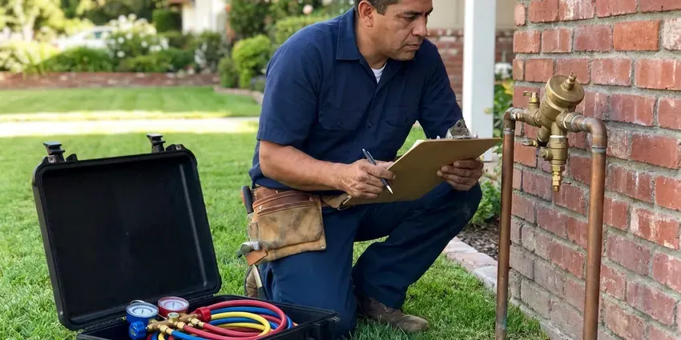

Water Leak Detection in Wausau, WI
Dealing with a hidden water leak in your Wausau, WI home can be stressful. Our team at HKV Plumbing uses advanced tools to pinpoint leaks accurately and minimize damage.
- Minimize Property Damage
- Fast Leak Detection
- Advanced Leak Technology
- Modern Technology

Get Reliable Water Leak Detection in Wausau, WI.
Don't let a hidden leak cause serious damage to your home. Contact HKV Plumbing for prompt and reliable service.
Professional Water Leak Detection Services in Wausau, WI
HKV Plumbing performs whole-property water leak detection, starting at the meter and working through the main service line, indoor plumbing, water heater, softener, irrigation and pool. We use meter flow tests and zone isolation to narrow down the leak before using locating equipment.
Our expertise includes:
- Toilet, faucet, softener and water heater leak diagnosis
- Detect leaks in walls, ceilings and under floors.
- Slab leak detection and repair.

Additional Plumbing Maintenance Services in Wausau, WI
Our maintenance and specialty plumbing services in Wausau, WI catch small problems before they become emergencies.


Customers
Why Choose HKV Plumbing for Water Leak Detection in Wausau, WI?
We look at the whole system instead of jumping to one suspect. That way you do not pay to fix a toilet when the real leak is a cracked irrigation line.
- Property Value, Addressing leaks quickly protects your property's long-term integrity and market value.
- Local Expertise, Our team understands the particular plumbing challenges faced by homes in Wausau, WI, including foundation types and pipe materials.
- Systematic Testing, We isolate each part of your water system to find exactly which one is leaking.
Citywide Coverage
HKV Plumbing proudly serves every neighborhood in and around Wausau, with fast response times for your water leak detection needs. Whether you're in the heart of the city or a surrounding suburb, our technicians are ready to assist.
Experienced Team
Our plumbers are highly trained and experienced in all forms of water leak detection, including challenging slab leaks in Wisconsin homes. They regularly train on current diagnostic equipment and techniques.
Safety-First Approach
At HKV Plumbing, safety and code compliance are paramount in all our water leak detection work. We make sure all detection methods are non-invasive and that any subsequent repairs meet Wisconsin plumbing codes and standards.
Trusted Certified Wausau Plumbing Services Professionals
At HKV Plumbing, we take pride in providing licensed, certified plumbing services throughout Wausau, WI. Backed by recognized industry credentials, our experienced plumbers combine technical skill with genuine customer care. Whether it is repair, installation, or maintenance, we follow strict safety and quality standards to deliver long-lasting results you can trust.
Call Us Now PHCC Plumbing Contractor Recognition
PHCC Plumbing Contractor Recognition Better Business Bureau (BBB) Accreditation
Better Business Bureau (BBB) Accreditation Angi Certified Pro
Angi Certified Pro ISO 9001 Quality Management Certification
ISO 9001 Quality Management CertificationDependable Water Leak Detection Services in Wausau, WI
Main Service Line Leak Detection in Wausau, WI
The line from the meter to your house carries full pressure and can leak underground for a long time. Wet soil, soft spots or unusually green patches of yard may be the only clues. We trace the line, listen for the leak and mark it for a targeted repair. Replacing old galvanized or polybutylene service lines is usually recommended.

Preventative Leak Inspections in Wausau, WI
Beyond emergency detection, HKV Plumbing offers preventative leak inspections to identify potential problems before they become major issues. This service is particularly valuable for older homes in Wausau with aging plumbing systems. We conduct thorough checks of visible and accessible pipes, connections and fixtures, looking for early signs of corrosion or wear. A proactive approach to leak detection can save homeowners significant money and hassle in the long run, extending the life of your plumbing system in Wisconsin.
Water Leak Detection for Insurance Claims in Wausau
After a water leak, accurate documentation of the leak's source and extent of damage is important for insurance claims. HKV Plumbing provides detailed reports and photographic evidence of our leak detection findings, assisting Wausau homeowners with their insurance processes. We work to make sure you have all the necessary information to support your claim, making a stressful situation a little simpler. Our transparent reporting helps streamline the recovery process following a water damage event in Wisconsin.
Commercial Water Leak Detection in Wausau, WI
Commercial properties in Wausau face unique challenges with larger, more complex plumbing systems. Leaks can disrupt business operations, lead to costly downtime and damage inventory. HKV Plumbing offers specialized commercial leak detection services, using industrial-grade equipment to locate leaks in large facilities, multi-story buildings and specialized systems. We work quickly to minimize impact on your business, providing rapid diagnosis and repair solutions.
Leak Detection for PEX and Copper Pipes in Wausau
Whether your plumbing system uses modern PEX tubing or traditional copper pipes, HKV Plumbing has the expertise to detect leaks in both materials. PEX, while flexible, can be vulnerable to damage from rodents or improper installation, while copper can corrode over time, especially with hard water. Our tools are effective across many pipe materials, allowing accurate detection regardless of your home's plumbing type.
Slab Leak Detection in Wausau
Slab leaks are common in homes on shifting soil and moving foundations. These leaks occur in pipes beneath your concrete slab, often indicated by warm spots on the floor, sudden spikes in your water bill or the sound of running water when all fixtures are off. HKV Plumbing uses specialized acoustic listening devices and thermal imaging cameras to precisely locate these hidden leaks without destructive guesswork. Early detection is key to preventing major foundation damage.
Preventative Leak Detection Audits in Wausau, WI
Beyond emergency services, HKV Plumbing also offers preventative leak detection audits for homeowners and businesses in Wausau, WI. This proactive approach involves a thorough inspection of your plumbing system to identify potential weak points or very small, developing leaks before they become major problems. Regular audits can help extend the life of your plumbing, save on water bills and avoid unexpected expensive repairs, especially in older properties.

Pool Water Leak Detection in Wausau, WI
Pools lose a lot of water to evaporation in summer heat, so a leak can hide behind normal loss. We use a bucket test to compare evaporation with actual water loss. Then we pressure test pool plumbing and dye test fittings, lights and skimmers. Finding the leak protects the pool and the soil around it.
Water Leak Detection Service Near Me in Wausau, WI
Our team is always ready to head to your location in Wausau, so your water leak is addressed promptly and professionally. We pride ourselves on being the go-to plumbing company for reliable and efficient leak detection services for all residents near me.
We understand local water use patterns around Wausau, including summer irrigation and pool top-offs. That helps us separate a real leak from heavy normal use. It also means we can give you practical tips for saving water.
HKV Plumbing at a Glance
- Fully licensed plumbing team covering Wausau, WI
- 24/7 emergency service with same-day scheduling
- Upfront, flat-rate pricing before work begins
- 4.8-star rated by 448+ Wisconsin customers
Wausau Map
Wausau Information
- Population
- 39,968
- Area codes
- 715/920/608
- Service area
- Wausau and communities within 40 miles
- Nearby
- Appleton, Oshkosh, Green Bay, Eau Claire
Water costs money in Wausau, WI, and hard water, slab foundations and irrigation all make hidden leaks common, so finding them fast protects both your home and your budget. Private wells serve a large number of rural homes, and some Wisconsin well water carries iron, nitrates or bacteria that call for regular testing.
Expert Services
Trust our professionals for reliable HKV Plumbing solutions in Wausau, WI.
Our Specialized Plumbing Services in Wausau, WI
At HKV Plumbing, we provide a complete range of plumbing services across Wausau, WI. From leak detection to full system installations, our team ensures fast, precise, and affordable service for both residential and commercial properties. Explore our core services below:


How Our Water Leak Detection Process Works in Wausau, WI
Our water leak detection process at HKV Plumbing is designed to be thorough, efficient and minimally disruptive to your Wausau home or business.
Request a Quote
Start by calling (414) 432-4641 to describe your leak concerns and schedule an appointment. Our team will collect initial information to prepare for your service visit.
On-Site Inspection
A certified technician arrives at your Wausau property, performs a visual inspection and uses professional tools like acoustic listening devices or thermal cameras to locate the leak source.
Diagnosis & Plan
Once the leak is pinpointed, we explain the findings, discuss repair options and provide a clear, upfront quote. We make sure you understand the scope of work before proceeding.
Frequently Asked Questions About Water Leak Detection in Wausau
The cost of water leak detection in Wausau, WI typically ranges from $250 to $750, depending on the complexity and location of the leak. Factors like whether it's a slab leak, a wall leak or an outdoor pipe leak can influence the final price. This initial cost covers the specialized equipment and expertise needed to accurately pinpoint the problem before any repairs begin.
Many water providers offer leak adjustments if you show the leak was repaired. Policies vary by provider. We give you a written repair invoice to back up your request.
Yes, a persistent water leak under your home can cause significant foundation damage. Full basements are standard in Wisconsin homes, and sump systems are common where clay or high groundwater holds water near the foundation. Water saturates the soil, leading to expansion and contraction that can shift or crack your foundation, so slab leaks make prompt detection crucial.
If you suspect a slab leak, the first step is to call a professional like HKV Plumbing right away. Avoid trying to dig or open up the slab yourself, as this can cause more damage. Turn off your main water supply if the leak is severe, and clear the area for our technicians.
Small repairs usually do not require a permit, but service line replacements and repipes often do. Requirements vary by city and county. We handle any permits needed.
Older homes in Wausau often have galvanized steel pipes, which are prone to corrosion and leaks over time. Polybutylene piping, installed in homes from the 1970s to 1990s, is also notorious for premature failure and leaks. While copper and PEX are generally reliable, even they can develop pinhole leaks due to water chemistry or installation issues.
While you can perform simple checks like monitoring your water meter, precisely detecting hidden leaks, especially slab or wall leaks, usually requires professional equipment and expertise. DIY attempts often lead to misdiagnosis or needless damage to your property.
Leaks in the main water line from the street to your home are typically your responsibility to repair. Our leak detection services cover these lines, and we can pinpoint the leak's exact location. We will then provide options for repair or replacement, so your main water supply is restored promptly and up to local Wausau codes.
What People Are Saying About Our Plumbing Experts?

Robert G.
The trenchless sewer replacement saved our front yard. They walked us through the camera inspection footage first so we knew exactly what we were paying for.
Sewer Line Replacement · La Crosse, WI
Emily R.
I called HKV Plumbing for plumbing repair, and the technician was fast, polite, and thorough. They explained the problem clearly and fixed it the same day. I will definitely hire them again. Highly recommended!
Plumbing Repair · Eau Claire, WI
Laura S.
I scheduled a water heater replacement, and the team made the process smooth and affordable. The new unit works perfectly, and they cleaned up after completing the job.
Water Heater Replacement · Green Bay, WI
Patricia H.
We had a slab leak that two other companies could not find. HKV Plumbing located it in under an hour, explained our options, and the price matched the quote to the dollar.
Slab Leak Repair · Green Bay, WIJames P.
Our commercial plumbing system had a leak under the sink, and HKV Plumbing handled it professionally. The plumbers arrived quickly and restored everything without disruption to our customers.
Commercial Plumbing · La Crosse, WI
Daniel K.
A pipe burst at 11 pm and they actually answered. The plumber showed up within the hour, shut everything down, and had us back to normal the next morning. Could not ask for more.
Emergency Plumbing · Eau Claire, WI